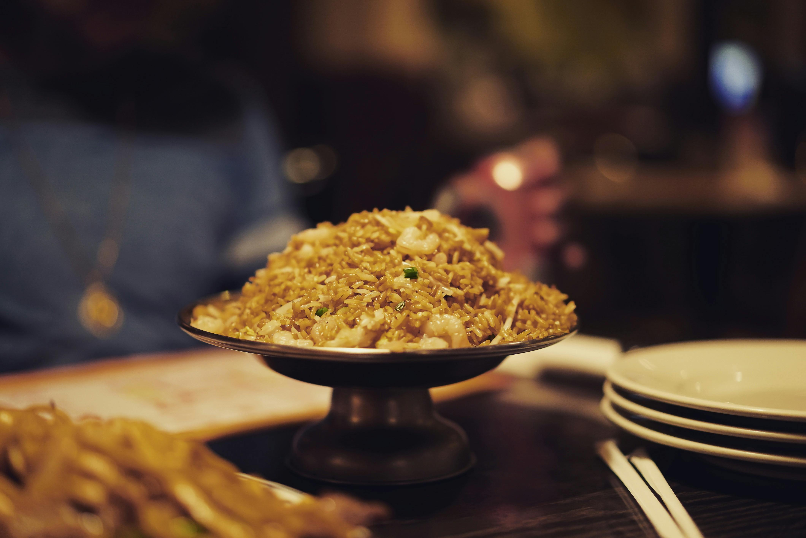

Keanekaragaman Kuliner Indonesia
Indonesia terkenal dengan kekayaan kulinernya yang mencerminkan keberagaman budaya dan tradisi. Dari Sabang hingga Merauke, setiap daerah memiliki makanan khas yang unik dan lezat.
Kuliner Khas Indonesia

Rendang (Sumatera Barat)
Rendang adalah masakan khas Minangkabau yang terbuat dari daging sapi, dimasak dengan santan, rempah-rempah, dan dimasak hingga kering. Masakan ini dinobatkan sebagai salah satu makanan terenak di dunia.

Sate (Jawa)
Sate adalah potongan daging kecil yang ditusuk, dibakar, dan disajikan dengan saus kacang atau bumbu kecap. Hidangan ini sangat populer di seluruh Indonesia.

Nasi Goreng
Nasi Goreng adalah nasi yang digoreng dengan campuran bumbu khas Indonesia, telur, ayam, dan sayuran. Hidangan ini sering menjadi menu favorit baik di rumah maupun restoran.